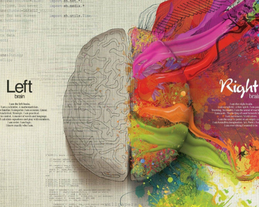

return jeffKeslin
thinking about thinking
According to thelearningweb.net and Professor Anthony Gregorc, I have thinking styles that can be can be described as Concrete Sequential and Concrete Random.
Concrete Sequential Thinking: Based in reality. Information is processed in an ordered, sequential, and linear way.
Concrete Random Thinking: Information is processed through experimentation.
These results come as no surprise to me when reflecting on how I've made choices in the past and how I've approached problems and made decisions. I like to think of myself as having a "mathematical mind" and I do not let my emotions make decisions for me. My appreciation of objective thinking and experimental problem solving led me to studying Engineering in college, and also to becoming a math teacher later on. And now, it's led me to coding. I really love seeing a solution come together sequentially when I'm coding. The problem solving process really is a lot of fun for me. I've also learned much of what I know about coding with Ruby or JavaScript by experimentation. I find the description of the left brain thinker to be pretty close to how I feel my brain works. And I believe, for better or worse, that my thinking is pretty lopsided to the left.
As a math teacher these two thinking styles also present themselves on a daily basis when looking at the way my lessons are created and presented. Part of teaching Geometry is teaching proofs, or in other words, how to linearly and logically (with precision and mathematical justification) get from point A to point B. This is essentially an attempt to teach my students how to be concrete sequential thinkers.
 The other cornerstone of my lessons is forcing students to use experimentation to find a solution. Making mistakes and taking mysterious routes to a solution are encouraged. When my students get stuck on a challenge problem and ask if doing this or that works, my response is often, "I don't know. Try it. See if the answer makes any sense." This answer frustrates them, but normally through this experimentation they discover something deeper about the problem and how the numbers work instead of just knowing the process of solving that particular problem.
The other cornerstone of my lessons is forcing students to use experimentation to find a solution. Making mistakes and taking mysterious routes to a solution are encouraged. When my students get stuck on a challenge problem and ask if doing this or that works, my response is often, "I don't know. Try it. See if the answer makes any sense." This answer frustrates them, but normally through this experimentation they discover something deeper about the problem and how the numbers work instead of just knowing the process of solving that particular problem.
As the Gregorc survey mentions, each learning style can be effective in its own way and no style should be deemed superior to another. I can see how any of the four thinking styles can be well suited for learning coding through Dev Bootcamp and I'm sure there are developers and bootcampers who are all over this spectrum. I think that by understanding these learning styles you can create an advantage when working with someone of an opposite style. By doing so you can have a group of people using multiple ways of thinking to look at the same problem and attack it from all angles. As long as everyone in that group can value other thinkers' ideas along with their own, this can be a very powerful dynamic for designing and problem solving.
Also, just for fun, I'd like to point out that sometimes I feel like my thinking style is not unlike Homer Simpson's.